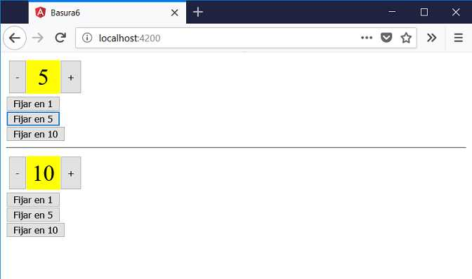

En muchas situaciones podemos resolver un problema definiendo una variable local en el template HTML del padre y mediante ésta llamar a sus métodos.
Si necesitamos acceder a la componente hija pero desde la clase (es decir el archivo .ts) tenemos un poco mayor de complejidad que pasaremos a ver en este concepto.
Crear una componente llamada 'selectornumerico' que le pasemos el mínimo y el máximo valor que puede mostrar. Dentro de la componente definir dos botones que puedan incrementar o decrementar en 1 el valor actual (no modificaremos nada la del ejercicio anterior)
En el template HTML de la componente padre definir dos selectores numéricos y tres botones que afectarán a cada selector numérico para fijar los valores 1, 5 y 10.
La aplicación completa se debe mostrar con una interfaz similar a:
Desde la línea de comandos de Node.js procedemos a crear el proyecto007:
f:\angularya> ng new proyecto007
Primero descendemos a la carpeta proyecto007 y nuevamente desde la línea de comandos procedemos a crear la componente 'selectornumerico' escribiendo:
f:\angularya\proyecto007> ng generate component selectornumerico
En nuestro tercer paso vamos a implementar la vista de la componente 'selectornumerico' y su modelo. Abrimos el archivo 'selectornumerico.component.ts' y codificamos:
import { Component, OnInit, Input } from '@angular/core';
@Component({
selector: 'app-selectornumerico',
templateUrl: './selectornumerico.component.html',
styleUrls: ['./selectornumerico.component.css']
})
export class SelectornumericoComponent implements OnInit {
@Input() minimo: number=1;
@Input() maximo: number=1;
actual: number=1;
constructor() { }
ngOnInit() {
this.actual = this.minimo;
}
incrementar() {
if (this.actual<this.maximo)
this.actual++;
}
decrementar() {
if (this.actual>this.minimo)
this.actual--;
}
fijar(v:number) {
if (v>=this.minimo && v<=this.maximo)
this.actual=v;
}
}
En la clase SelectornumericoComponent podemos identificar el método que llamaremos desde la clase AppComponent:
fijar(v:number) {
if (v>=this.minimo && v<=this.maximo)
this.actual=v;
}
Codificamos ahora el archivo 'selectornumerico.component.html':
<div class="selector">
<button (click)="decrementar()">-</button>
<div class="valor">{{actual}}</div>
<button (click)="incrementar()">+</button>
</div>
Para definir la hoja de estilo del 'selectornumerico' abrimos el archivo 'selectornumerico.component.css' y codificamos:
.selector {
display:inline-flex;
margin:0.2rem;
}
.valor {
display:inline-flex;
justify-content: center;
align-items: center;
width: 3rem;
height: 3rem;
background:#ff0;
font-size:2rem;
}
button {
height: 3rem;
}
Abrimos ahora el archivo 'app.component.html' y remplazamos su contenido con la definición de dos selectores numericos que definen una variable local y tres botones para cada uno:
<div> <app-selectornumerico [minimo]="1" [maximo]="10" #selector1></app-selectornumerico> <br> <button (click)="fijarSelector1(1)">Fijar en 1</button><br> <button (click)="fijarSelector1(5)">Fijar en 5</button><br> <button (click)="fijarSelector1(10)">Fijar en 10</button> <hr> <app-selectornumerico [minimo]="1" [maximo]="10" #selector2></app-selectornumerico> <br> <button (click)="fijarSelector2(1)">Fijar en 1</button><br> <button (click)="fijarSelector2(5)">Fijar en 5</button><br> <button (click)="fijarSelector2(10)">Fijar en 10</button> </div>
La clase AppComponent es la que presenta la mayor cantidad de cambios:
import { Component,ViewChild } from '@angular/core';
import { SelectornumericoComponent} from './selectornumerico/selectornumerico.component'
@Component({
selector: 'app-root',
templateUrl: './app.component.html',
styleUrls: ['./app.component.css']
})
export class AppComponent {
@ViewChild('selector1') selector1!: SelectornumericoComponent;
@ViewChild('selector2') selector2!: SelectornumericoComponent;
fijarSelector1(valor:number) {
this.selector1.fijar(valor);
}
fijarSelector2(valor:number) {
this.selector2.fijar(valor);
}
}
Debemos importar la clase SelectornumericoComponent:
import { SelectornumericoComponent} from './selectornumerico/selectornumerico.component'
Definir una propiedad llamada selector1 y mediante el decorador @ViewChild hacemos referencia a la variable definida en el template HTML que también se llama 'selector1':
@ViewChild('selector1') selector1!: SelectornumericoComponent;
Mediante las propiedades selector1 y selector2 tenemos las referencias de las dos componentes hijas, luego podemos llamar a sus métodos o acceder a sus propiedades:
fijarSelector1(valor:number) {
this.selector1.fijar(valor);
}
fijarSelector2(valor:number) {
this.selector2.fijar(valor);
}
Si ejecutamos ahora el proyecto:
ng server -o
Podemos probar esta aplicación en la web aquí.